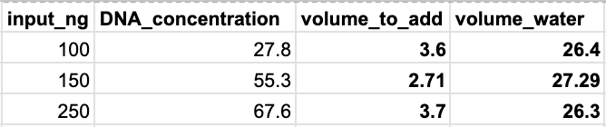
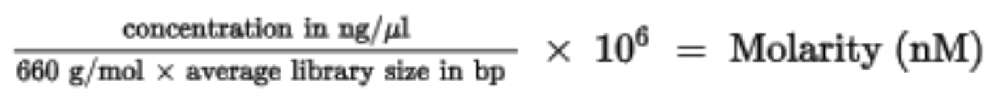
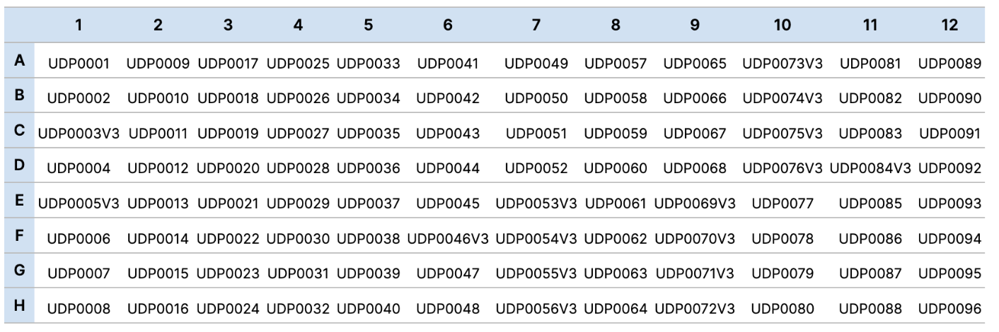
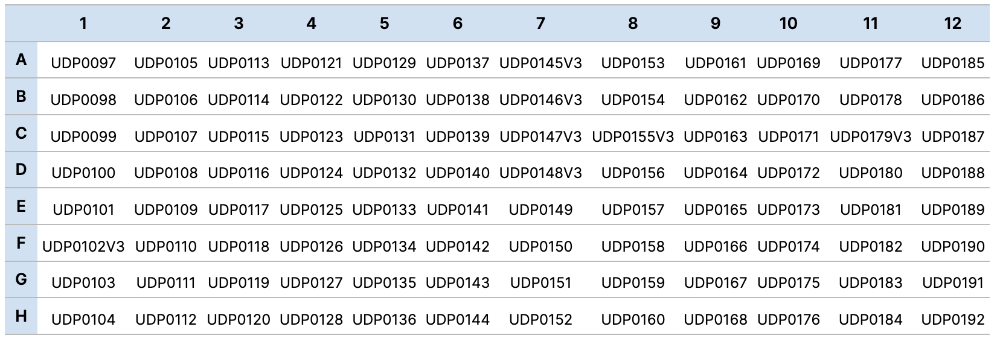

Illumina DNA Prep
The Illumina DNA Prep kit provides a workflow for preparing a whole-genome sequencing pool consisting of up to 384 unique dual-indexed paired-end libraries/samples. In the Gatins lab, we have all of the components needed for the Illumina DNA Prep workflow, including Illumina DNA/RNA unique dual (UD) index adapters: Plates A and B. This means we can uniquely index up to 192 samples on a single lane.
NOTE: This protocol will detail preparations utilizing 100-500ng of starting DNA so that standardization is not necessary at the end of the protocol. If you will be using this kit to prepare lower-quantity samples, please refer to the protocol online and make changes accordingly.
We have had luck preparing full and half-reactions, so decide which way to prepare depending on your input quantity. All reactions require 100-500ng of DNA to start, so low concentration samples may require the full 30 µl input volume to reach this quantity while higher-concentration samples can be prepped using the halved input volume of 15 µl.
NOTE: It is easiest to prepare libraries in batches of 16 using strip tubes, but prepare fewer samples for your first time or feel free to upgrade to a full plate if you feel very comfortable with the protocol.
Prepare samples and reagents
| Reagent | Storage box | Preparation |
|---|---|---|
| Tagmentation Buffer 1 (TB1) | -20°C | Bring to room temperature |
| Bead-Linked Transposomes (BLT) | 4°C (bead box) | Bring to room temperature |
| Enhanced PCR Mix (EPM) | -20°C | Thaw on ice |
| Tagment Stop Buffer (TSB) | 4°C | Place at room temperature |
| Tagment Wash Buffer (TWB) | 4°C | Place at room temperature |
| Resuspension Buffer (RSB) | -20°C | Place at room temperature (this isn’t used until the very end of the protocol, but it takes forever to thaw so I take it out early) |
Step 1: Tagment Genomic DNA
- Standardize DNA to 100-500ng in 15 µl (half rxn) or 30 µl (full rxn) in strip tubes or a plate:
| half rxn | full rxn | |
|---|---|---|
| DNA | 2-15 µl | 2-30 µl |
| nuclease-free water | 15-DNA volume (µl) | 30-DNA volume (µl) |
NOTE: I like to keep all of this organized in a google/Excel sheet. Here is an example of what this might look like:

- Vortex BLT for 10 seconds to resuspend. Repeat as necessary. DO NOT centrifuge.
- Vortex TB1 to mix.
- For each sample, combine the following volumes to prepare the Tagmentation Master Mix. Multiply each volume by the number of samples being processed (these numbers already include extra to account for pipetting error):
| half rxn | full rxn | |
|---|---|---|
| BLT | 5.5 µl | 11 µl |
| TB1 | 5.5 µl | 11 µl |
- Vortex the Tagmentation Master Mix for 10 seconds to resuspend.
6a. IF COMPLETING >16 SAMPLES
7a. Divide the Tagmentation Master Mix volume equally into an 8-strip tube
8a. Using a multichannel pipette, transfer Tagmentation Master Mix from the 8-tube strip to each well of the plate containing a sample.
| half rxn | full rxn | |
|---|---|---|
| Tagmentation Master Mix | 10 µl | 20 µl |
9a. Pipette each sample 10 times to mix before switching tips and moving on to the next column.
10a. Discard the 8-tube strip after Master Mix has been dispensed.
6b. IF COMPLETING <16 SAMPLES 7b. Pipette Tagmentation Master Mix one sample at a time, mixing 10 times with the pipette after each addition. Switch tips in between samples.
| half rxn | full rxn | |
|---|---|---|
| Tagmentation Master Mix | 10 µl | 20 µl |
This step can be done on each sample individually if you are working with a small enough number of samples, saving plastics and opportunity for additional pipetting error. If you are preparing >16 samples in one batch, follow option (a).
- Place on the preprogrammed thermal cycler and run the TAG program:
• Choose the preheat lid option and set to 100°C
• Set the reaction volume to 50 µl
• 55°C for 15 minutes
• Hold at 10°C
NOTE: In the Gatins Lab, go to “My Folders” and the TAG program is saved in the illumina_dna_prep folder
Program Duration: ~15 minutes
Step 2: Post-Tagmentation Clean Up
Before starting this step, I like to take the Adapter plate that I will be using out and place it on ice to thaw before we reach Step 3.
- If precipitates are observed in TSB, heat at 37°C for 10 minutes and vortex until precipitates are dissolved.
- Remove samples from thermal cycler following the TAG program and add TSB to each sample:
| half rxn | full rxn | |
|---|---|---|
| TSB | 5 µl | 10 µl |
- Place on the preprogrammed thermal cycler and run the PTC program:
• Choose the preheat lid option and set to 100°C • Set the reaction volume to 60 μl • 37°C for 15 minutes • Hold at 10°C
NOTE: In the Gatins Lab, go to “My Folders” and the PTC program is saved in the illumina_dna_prep folder
Program Duration: ~15 minutes
- Remove from thermal cycler and place tubes or plate on magnetic stand until liquid is clear (~3 minutes).
If preparing samples in a plate, ask Lotterhos lab for their plate magnet. Otherwise, use the two-column magnet in our lab for strip tubes.
- Vortex to mix TWB during this time.
- Using a multichannel pipette, remove and discard supernatant.
- Wash the beads as follows:
| half rxn | full rxn | |
|---|---|---|
| TWB | 50 µl | 100 µl |
- Wash the beads a second time, but DO NOT remove and discard supernatant (step e). Keep on the magnetic stand until step Step 3 of the Procedure: Amplify Tagmented DNA. The TWB remains in the wells to prevent overdrying of the beads.
Step 3: Amplify Tagmented DNA
- Invert to mix and centrifuge EPM.
- Spin down adapter plate in big centrifuge (located in the shared molecular space) for 1 minute at 1000 x g to settle liquid away from the seal.
- Prepare PCR Master Mix. Multiply each volume by the number of samples being processed:
| half rxn | full rxn | |
|---|---|---|
| EPM | 11 µl | 22 µl |
| nuclease-free water | 11 µl | 22 µl |
- Vortex, and then centrifuge the PCR Master Mix at 280 × g for 10 seconds.
- With the plate on the magnetic stand, use a 200 μl multichannel pipette to remove and discard supernatant.
• Foam that remains on the well walls does not adversely affect the library.
- Remove from magnetic stand.
- Immediately add PCR Master Mix onto the beads in each sample well and pipette until beads are fully resuspended.
| half rxn | full rxn | |
|---|---|---|
| PCR Master Mix | 20 µl | 40 µl |
- Add the appropriate index adapters to each sample:
| half rxn | full rxn | |
|---|---|---|
| Prepared i7+i5 | 5 µl | 10 µl |
- Using a pipette set to 20 μl (half rxn) or 40 μl (full rxn), pipette 10 times to mix. Alternatively, seal the sample plate and use a plate shaker at 1600 rpm for 1 minute.
- Seal the samples and centrifuge at 280 × g for 30 seconds.
- Place on the preprogrammed thermal cycler and run the BLT PCR program:
• Choose the preheat lid option and set to 100°C
• 68°C for 3 minutes
• 98°C for 3 minutes
• 5 cycles of:
98°C for 45 seconds
62°C for 30 seconds
68°C for 2 minutes
68°C for 1 minute• Hold at 10°C
NOTE: In the Gatins Lab, go to “My Folders” and the BLT PCR program is saved in the illumina_dna_prep folder
Program Duration: ~30 minutes
If you are moving straight on to library cleanups and quality checks after the PCR finishes, take out the Illumina Purification Beads (IPB), Qubit reagents, and tapestation tape and reagents to all come to room temperature.
SAFE STOPPING POINT! Samples can be left in 4°C fridge for up to 30 days at this point.
Step 4: Clean Up Libraries
Prep for this step: create fresh 80% ethanol. Enough for 400 µl per sample.
Centrifuge at 280 × g for 1 minute to collect contents at the bottom of the well.
Place the samples on the magnetic stand and wait until the liquid is clear (~5 minutes).
While you wait, resuspend IPB as follows:
To mix, invert the bottle manually for 2 minutes, at a rate of 1 inversion per second. While inverting, rotate the bottle 90 degrees every 30 seconds.
If beads are still adhered to the walls of the container, invert the bottle manually for an additional 1 minute.
Transfer supernatant from each well of the PCR plate to the corresponding well of a new plate/set of tubes.
| half rxn | full rxn | |
|---|---|---|
| supernatant to transfer | 22.5 µl | 45 µl |
- For standard DNA input > 500 bp, perform the following steps:
| half rxn | full rxn | |
|---|---|---|
| nuclease-free water | 20 µl | 40 µl |
| half rxn | full rxn | |
|---|---|---|
| IPB | 22.5 µl | 45 µl |
| half rxn | full rxn | |
|---|---|---|
| IPB (new) | 7.5 µl | 15 µl |
| half rxn | full rxn | |
|---|---|---|
| supernatant | 62.5 µl | 125 µl |
- Incubate the sealed samples at room temperature for 5 minutes.
- Place on the magnetic stand and wait until the liquid is clear (~5 minutes).
- Without disturbing the beads, remove and discard supernatant.
- Wash beads as follows:
- Wash beads a second time.
- Use a 20 μl pipette to remove and discard residual EtOH.
- Air-dry on the magnetic stand for 5 minutes.
- Remove from the magnetic stand.
- Vortex RSB to mix and add to the beads:
| half rxn | full rxn | |
|---|---|---|
| RSB | 16 µl | 32 µl |
- Pipette to resuspend.
- Incubate at room temperature for 2 minutes.
- Place the plate on the magnetic stand and wait until the liquid is clear (~2 minutes).
- Transfer final supernatant to a new PCR plate/set of tubes:
| half rxn | full rxn | |
|---|---|---|
| final product | 15 µl | 30 µl |
NOTE: This is quite tricky with the half rxn volume. It is tough to not grab the beads, so just go slow and transfer one sample at a time if you need.
SAFE STOPPING POINT! If you are stopping, seal the samples and store at ‑25°C to ‑15°C for up to 30 days.
Step 5: Quality Check
At this point, use the Qubit 1x High-Sensitivity kit to check individual library concentrations and a D1000 Tapestation analysis to check individual library fragment lengths.
Check libraries for the following:
- All samples must have average fragment lengths >300bp for paired-end 150bp sequencing. If the Tapestation analysis shows shorter fragments, redo the prep.
- All samples must have a minimum concentration of 2 nM for sequencing. Use 600 bp as the average library size in the following formula to calculate your sample concentrations:

Samples with concentrations <2nM must be re-prepped.
Step 6: Pool Libraries
When the DNA input is 100–500 ng, quantifying and normalizing individual libraries generated in the same experiment is not necessary. However, the final yield of libraries generated in separate experiments can vary slightly.
- Combine 5 μl each library (up to 384 libraries, or 192 in our lab) in a 1.5 ml microcentrifuge tube.
- Vortex to mix, and then centrifuge.
- Quantify the library pool using a dsDNA fluorescent dye method, such as Qubit or PicoGreen.
If you have QC’d each individual library, use this information to pool:
- Calculate the average concentration from all of your samples, and multiply this number by 5 to find the total quantity (ng) of DNA you will add to the pool for each sample. Use this value to add less volume for higher-concentration samples and more volume for lower-concentration samples.
- Vortex to mix, and then centrifuge.
- Quantify the library pool using a dsDNA fluorescent dye method, such as Qubit or PicoGreen.
Step 7: Submission for Sequencing!
Contact your sequencing company for specific instructions. Below are important details regarding the specific dual-index adapters used for our protocol, as you will need these for submission to a sequencer if you want them to demultiplex your samples.
See this link for resources regarding pooling best-practices depending on plexity and individual index sequences.

